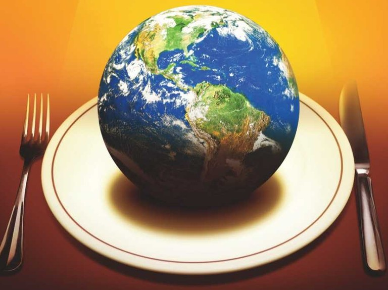
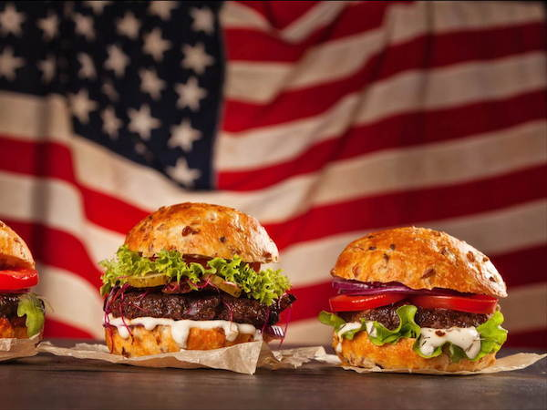

The best foodz on planet Earth!
Travel the world through these amazing dishes!

First stop - Kenya, East Africa!
What better place to start than the cradle of the world.
Kenya is home to some of the oldest traditions in the world, and almost every one of them
involves food. We have compiled a list of some of the most popular traditional dishes
you will find in the heart of Africa. Not only are these dishes delicious, but they inspire
a sense of community and familia. So make sure you have a kubwa(big) appetite,
because these meals are meant to feed a tribe!
Kenyan recipe book:
- Nyama Choma(Kenyan Roast Meat)
- Kenyan beef stew
- Chapati's'
- Rice Pilau
- Mukimo
- Ugali
- Kenyan Chai tea
Stop #2 - United States of America!

American classics:
- Sunrise Bacon Cheeseburger (My personal favorite!)
- Philly Cheese steak sandwich
- Smokey briskett and homemade bbq sauce
- Melt in your mouth Prime Rib
- Southernn style Chicken and garlic cheddar jalepeno mashed potatoes
- Clam chowder and Lobster mac n cheese
Return to top